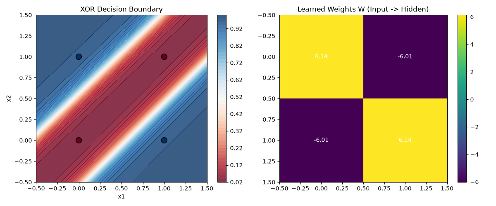

Implement a 2-2-1 structure MLP network from scratch using TensorFlow to solve the XOR classification problem.
Below is the key training loop:
import tensorflow as tf
# 数据准备
x = tf.constant([[0.0, 0.0], [0.0, 1.0], [1.0, 0.0], [1.0, 1.0]], dtype=tf.float64)
target = tf.constant([[0.0], [1.0], [1.0], [0.0]], dtype=tf.float64)
# 模型参数初始化
W = tf.Variable(tf.random.normal([2, 2], dtype=tf.float64))
b_hidden = tf.Variable(tf.zeros([2], dtype=tf.float64))
v = tf.Variable(tf.random.normal([2, 1], dtype=tf.float64))
b_output = tf.Variable(tf.zeros([1], dtype=tf.float64))
optimizer = tf.keras.optimizers.Adam(learning_rate=0.05)
# 训练循环
for epoch in range(300):
with tf.GradientTape() as tape:
hidden = tf.sigmoid(tf.matmul(x, W) + b_hidden)
logits = tf.matmul(hidden, v) + b_output
loss = tf.reduce_mean(tf.nn.sigmoid_cross_entropy_with_logits(labels=target, logits=logits))
gradients = tape.gradient(loss, [W, b_hidden, v, b_output])
optimizer.apply_gradients(zip(gradients, [W, b_hidden, v, b_output]))
print("Training finished.")
The decision boundary learned by the MLP:

The model successfully classified all four XOR samples correctly after training.